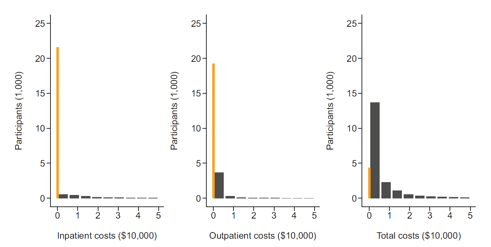
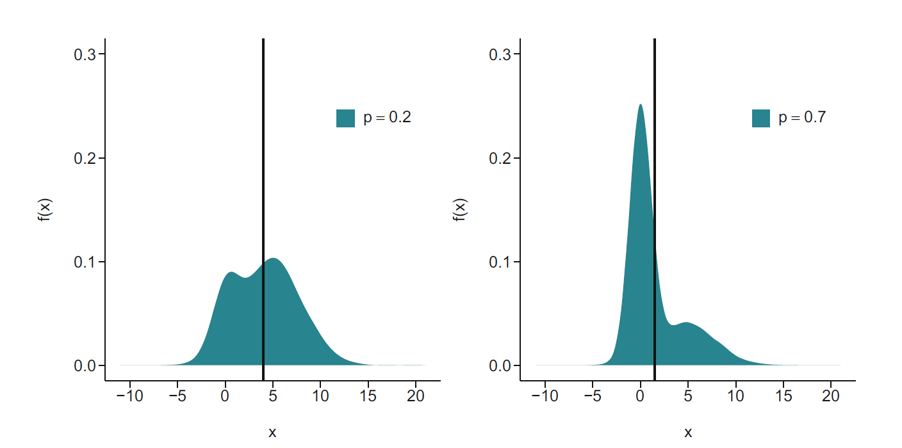

보건의료 비용은 관점에 따라 서로 다른 의미를 갖는다. 환자에게 비용은 본인부담금, 공제액, 정액부담금과 비급여 지출을 뜻할 수 있다. 보험자에게는 의료기관에 지급한 상환액이 비용이며, 의료제공자에게는 인력, 장비, 시설과 행정체계를 포함하여 서비스를 생산하는 데 투입된 자원의 가치가 비용이다. 따라서 같은 진료행위라도 환자, 보험자, 의료기관의 관점에 따라 보고되는 금액은 달라질 수 있다.
의료비 자료에서 자주 사용되는 개념은 다음과 같다.
청구금액(charges): 의료기관이 진료 후 최초로 청구한 금액이다. 계약이나 협상 이전의 금액이므로 실제 자원 사용량이나 최종 지급액과 일치하지 않을 수 있다.
지급액(payments): 보험자 또는 환자가 의료기관에 실제로 지급한 금액이다.
지출액(expenditures): 보험 지급액, 본인부담금과 기타 의료서비스 관련 지출을 합한 금액이다.
자원비용(resource cost): 의료서비스를 생산하기 위해 사용된 인력, 시설, 장비와 소모품의 기회비용이다.
이 장에서는 환자에게 제공된 의료서비스에 대해 실제로 지출된 총액을 보건의료 비용의 분석대상으로 삼는다. 분석 전에 반드시 비용의 관점, 측정기간, 포함되는 서비스, 화폐가치의 기준연도와 물가조정 방법을 명확히 정의해야 한다.
보건경제학에서 비용은 단순한 현금 지출이 아니라 어떤 자원을 한 용도에 사용함으로써 포기한 최선의 대안가치인 기회비용(opportunity cost)으로 정의된다. 청구자료의 지급액은 실제 분석에서 가장 쉽게 관찰되는 금액이지만, 시장가격이 규제되어 있거나 상환액이 협상에 의해 결정되는 경우에는 자원비용과 차이가 날 수 있다. 따라서 관찰된 금액이 연구에서 의도한 경제적 비용을 어느 정도 대리하는지 설명해야 한다.
비용의 범위는 연구관점에 따라 달라진다.
보건의료체계 관점은 진료비, 검사비, 약제비와 입원비 같은 직접 의료비를 주로 포함한다.
환자 관점은 본인부담금뿐 아니라 교통비, 간병비와 같은 직접 비의료비를 포함할 수 있다.
사회적 관점은 의료비와 함께 질병 또는 치료로 인한 생산성 손실까지 고려한다.
개별 환자 \(i\)의 총비용은 서비스 종류 \(k\)별 이용량 \(q_{ik}\)와 단위가격 \(c_k\)의 합으로 표현할 수 있다.
\[
C_i=\sum_{k=1}^{K}q_{ik}c_k
\]
이 식은 두 집단의 비용 차이가 의료이용량의 차이, 단위가격의 차이 또는 두 요소의 결합으로 발생할 수 있음을 보여준다. 여러 기관이나 여러 연도의 자료를 결합할 때에는 단가체계의 차이를 임상적 이용량 차이로 잘못 해석하지 않도록 해야 한다.
서로 다른 시점의 비용을 비교할 때에는 기준연도 가격으로 환산한다. 기준연도 \(t_0\)의 물가지수를 \(I_{t_0}\), 비용이 관찰된 연도 \(t\)의 물가지수를 \(I_t\)라 하면 실질비용은
\[
C_{i,t_0}=C_{i,t}\frac{I_{t_0}}{I_t}
\]
로 조정할 수 있다. 장기간에 걸친 경제성 평가에서는 물가조정과 별개로 미래비용을 현재가치로 환산하는 할인도 필요하다. 시점 \(t\)의 비용 \(C_t\)에 연 할인율 \(r\)을 적용한 현재가치는
\[
PV(C_t)=\frac{C_t}{(1+r)^t}
\]
이다. 물가조정은 화폐의 구매력을 동일하게 만드는 과정이고, 할인은 발생시점이 다른 비용에 대한 시간선호를 반영하는 과정이므로 두 개념을 구분해야 한다.
6.1.1 비용자료의 통계적 특성
보건의료 비용자료는 대체로 다음 특성을 함께 갖는다.
비용은 음수가 될 수 없다.
의료서비스를 이용하지 않은 사람에게는 비용이 정확히 0이다.
양의 비용은 매우 오른쪽으로 치우치며 긴 꼬리를 갖는다.
평균이 증가할수록 분산도 증가하는 이분산성이 흔하다.
소수의 고비용 환자가 총지출의 큰 비중을 차지한다.
평균과 중앙값의 차이가 매우 크다.
이러한 비용자료는 0에서 점질량(point mass)을 가지면서 양의 영역에서는 연속분포를 따르는 반연속 분포(semi-continuous distribution)로 표현할 수 있다. \(D=I(Y>0)\), \(p(\mathbf X)=P(D=1\mid\mathbf X)\)라 하고 양의 비용의 조건부분포를 \(F_+(y\mid\mathbf X)\)라 하면
이다. 첫 번째 항은 의료이용자 사이의 비용 변동을, 두 번째 항은 비용 발생 여부가 서로 다른 데서 생기는 변동을 나타낸다. 따라서 0의 비율이 높거나 양의 비용 평균이 클수록 전체 비용분산이 크게 증가할 수 있다.
우측 꼬리가 긴 분포에서는 표본평균이 연구대상인 산술평균의 자연스러운 추정량이기는 하지만, 소수의 극단값에 민감하여 표본 간 변동이 커진다. 극단값을 자동으로 제거하거나 임의로 절단하면 평균비용이라는 추정대상이 바뀔 수 있으므로, 자료오류 여부를 먼저 확인한 뒤 강건성 분석과 적절한 확률모형을 사용해야 한다.
이 특성 때문에 정규성과 등분산성을 전제로 하는 단순한 선형회귀만으로는 비용의 분포를 충분히 설명하기 어렵다. 연구 질문이 평균비용, 중앙비용, 양의 비용 발생확률 또는 고비용군에 관한 것인지에 따라 분석모형도 달라져야 한다.
6.2 의료이용 및 비용자료
의료비 분석에서는 입원비, 외래비, 처방약비, 본인부담금과 총의료비를 별도로 또는 통합하여 다룬다. 다음 그림은 성인 표본의 입원비, 외래비와 총의료비 분포를 보여준다. 입원비와 외래비에는 0이 매우 많고, 양의 값은 모두 강한 우측 비대칭을 보인다.

구분
통계량
입원비
외래비
총의료비
전체
대상자 수
23,373
23,373
23,373
전체
평균비용
1,388달러
523달러
5,927달러
전체
중앙비용
0달러
0달러
1,189달러
전체
비용이 0인 비율
92%
82%
19%
양의 비용
대상자 수
1,810
4,156
19,022
양의 비용
평균비용
17,925달러
2,941달러
7,283달러
양의 비용
중앙비용
9,857달러
710달러
2,026달러
전체 평균은 비용이 0인 사람과 양의 비용을 가진 사람을 모두 포함한다. 반면 양의 비용 조건부 평균은 실제로 의료서비스를 이용한 사람들의 지출 수준을 나타낸다. 두 통계량은 서로 다른 연구 질문에 답한다.
그림의 막대가 0 근처에 집중되어 있으면서 오른쪽으로 긴 꼬리를 보이는 것은 하나의 정규분포가 아니라 비용 발생 과정과 비용 규모 과정이 결합되어 있음을 시사한다. 표에서 입원비의 전체 중앙값이 0달러인 것은 대상자의 절반 이상이 입원하지 않았다는 뜻이며, 양의 비용 중앙값 9,857달러는 입원한 사람들만을 대상으로 한 전형적 지출 수준이다. 두 값을 같은 의미의 대표값으로 비교해서는 안 된다.
전체 평균과 양의 비용 평균은 다음 관계를 갖는다.
\[
E(Y)=P(Y>0)E(Y\mid Y>0)
\]
예를 들어 입원비 자료에서 양의 비용 비율이 약 \(0.08\)이고 양의 비용 평균이 17,925달러이면 전체 평균은 약 \(0.08\times17{,}925=1{,}434\)달러가 된다. 표의 1,388달러와 약간 다른 것은 표시된 비율과 평균이 반올림되었기 때문이다. 이 항등식은 전체 평균비용 차이가 이용확률과 이용자 비용 중 어느 부분에서 발생했는지를 분해하는 출발점이 된다.
의료서비스 접근성에 관심이 있다면 비용 발생 여부와 양의 비용 규모를 구분하는 것이 중요하다.
총재정부담이나 예산영향에 관심이 있다면 0을 포함한 전체 평균비용이 중요하다.
전형적인 개인의 부담을 설명하려면 중앙값이나 다른 분위수가 더 적합할 수 있다.
6.2.1 관찰기간, 중도절단과 비용의 비교가능성
비용은 일정한 관찰창(time window) 동안 누적되는 결과이므로 모든 대상자가 동일한 기간 동안 관찰되었는지 확인해야 한다. 1년 비용과 3개월 비용을 단순 비교할 수 없으며, 짧은 관찰기간의 비용에 4를 곱해 연간비용으로 환산하는 방법은 비용 발생률이 시간에 걸쳐 일정하다는 강한 가정을 필요로 한다.
사망, 연구탈락 또는 자료종료 때문에 관찰기간이 짧아지면 누적비용은 우측 중도절단(right censoring)을 받는다. 생존기간 분석과 달리 비용은 중도절단 시점 이전에도 계속 누적되므로, 완전관찰자만 분석하거나 관찰비용을 단순 연환산하면 편향될 수 있다. 검열이 공변량을 조건으로 독립적이라는 가정하에서는 역확률 검열가중치(inverse probability of censoring weight)를 사용하여 시점별 비용을 가중할 수 있다.
구간 \(j\)에서 관찰된 비용을 \(Y_{ij}\), 해당 구간까지 검열되지 않을 조건부 확률을 \(G_{ij}\)라 하면 가중 누적비용의 기본 형태는
이다. 따라서 \(\exp\{E(\log Y)\}\)는 \(E(Y)\)와 같지 않다. 로그척도의 회귀결과를 원래 비용척도의 평균으로 되돌릴 때에는 잔차분산을 반드시 고려해야 한다.
그림에서 로그변환 전 분포의 긴 오른쪽 꼬리는 로그척도에서 압축되어 보다 대칭적으로 변한다. 그러나 로그변환은 극단값을 제거하는 것이 아니라 거리척도를 변경하는 것이다. 원래 척도에서 1,000달러와 2,000달러의 차이, 10,000달러와 11,000달러의 차이는 모두 1,000달러이지만 로그척도에서는 전자가 훨씬 큰 차이로 표현된다. 따라서 로그회귀는 절대 비용 차이보다 상대적 차이에 더 직접적으로 대응한다.
이다. 재변환에 필요한 것은 \(E(\varepsilon_i\mid\mathbf X_i)=0\)이 아니라 \(E\{\exp(\varepsilon_i)\mid\mathbf X_i\}\)이다. 이 값이 공변량에 따라 달라지면 하나의 공통 보정계수로는 모든 대상자의 평균비용을 정확히 복원할 수 없다.
Breusch-Pagan 검정은 로그오차 분산의 공변량 의존성을 탐색하는 도구이지 로그정규성이나 평균모형의 적합성을 검정하는 도구는 아니다. 표본수가 매우 크면 작은 이분산성도 유의해질 수 있으므로, 잔차 대 적합값 그림과 집단별 잔차분산을 함께 살펴야 한다.
잔차분산이 공변량에 따라 달라지는지 평가하는 대표적인 방법이 Breusch-Pagan 검정이다. 선형회귀 잔차를 \(e_i\)라 하면 잔차제곱 \(e_i^2\)을 원래 공변량에 회귀하여 그 설명력을 검정한다. 귀무가설은 잔차분산이 공변량과 무관하다는 것이다.
이다. 같은 \(\beta_j\)라도 기준 평균비용이 높은 대상자에서 절대 비용증가는 더 크다. 따라서 비용비와 함께 표준화된 평균비용 차이를 제시하면 정책적 해석이 쉬워진다.
분산함수가 완전히 맞지 않더라도 조건부 평균함수 \(E(Y\mid\mathbf X)=\exp(\mathbf X^\mathsf T\boldsymbol\beta)\)가 옳으면 준우도 관점에서 회귀계수는 유용할 수 있다. 이때 모형기반 표준오차 대신 강건 샌드위치 표준오차를 사용하면 분산함수 오지정에 대한 추론의 민감도를 줄일 수 있다.
양의 비용을 분석할 때 로그정규 모형과 감마 모형 중 하나가 항상 우월한 것은 아니다. 다음을 함께 검토해야 한다.
로그변환 후 잔차가 대칭적이고 정규분포에 가까운가
잔차분산이 평균 또는 공변량에 따라 달라지는가
감마분포가 극단적인 고비용 꼬리를 충분히 표현하는가
연구대상이 산술평균인지 기하평균 또는 중앙값인지
추정효과를 덧셈척도와 곱셈척도 중 어느 척도로 제시할 것인지
로그정규 모형과 감마 모형은 서로 다른 척도의 결과에 적합되므로 단순히 두 모형의 AIC를 직접 비교해서는 안 된다. 모형 진단, 잔차, 예측오차와 연구목표를 종합하여 선택해야 한다.
양의 비용분포의 분산함수를 경험적으로 탐색하는 방법으로 수정 Park 검정을 사용할 수 있다. 먼저 평균모형을 적합하여 예측평균 \(\widehat\mu_i\)와 잔차 \(e_i=Y_i-\widehat\mu_i\)를 구한 뒤
\[
\log(e_i^2)=a+b\log(\widehat\mu_i)+u_i
\]
를 적합한다. 추정된 \(b\)가 0에 가까우면 등분산 정규모형, 2에 가까우면 감마 분산함수, 3에 가까우면 역가우스 분산함수를 시사한다. 이는 절대적인 모형 선택 검정이 아니라 분산구조를 탐색하는 보조도구이다.
연결함수의 적절성은 예측값의 거듭제곱항을 추가하는 링크 검정, 부분잔차 그림 또는 Box-Cox 계열을 통해 검토할 수 있다. 최종 선택에서는 평균비용의 표본외 예측오차, 예측비용 총합과 관찰비용 총합의 일치, 위험군별 보정도와 극단 고비용 관측치에 대한 민감도를 함께 평가해야 한다.
AIC를 비교하려면 두 모형이 동일한 관측자료에 대해 동일한 척도의 완전한 우도를 제공해야 한다. lm(log(Y))의 정규우도는 \(\log(Y)\)의 우도이므로 원래 \(Y\)의 로그정규우도와 비교하려면 변수변환의 야코비안 항 \(-\sum_i\log(Y_i)\)을 포함해야 한다. 이 점을 무시한 AIC 비교는 적절하지 않다.
6.5 0을 포함하는 비용자료와 혼합분포
비용이 0인 관측치는 단순한 작은 값이 아니라 의료서비스를 이용하지 않았다는 별도의 상태를 나타낼 수 있다. 0이 많은 비용분포는 서로 다른 하위집단이 결합된 혼합분포로 생각할 수 있다.
확률 \(p\)로 평균 \(\mu_F\)인 분포 \(F\)를 따르고 확률 \(1-p\)로 평균 \(\mu_G\)인 분포 \(G\)를 따른다면 전체 평균은
\[
E(Y)=p\mu_F+(1-p)\mu_G
\]
이다.

비용자료에서는 첫 번째 성분을 비용이 0인 점질량으로, 두 번째 성분을 양의 비용분포로 둘 수 있다. 이 구조를 명시적으로 분석하는 대표적 방법이 2부분 모형이다.
비용이 0일 확률을 \(1-p\), 양의 비용의 밀도를 \(f_+(y)\)라 하면 전체 분포는
이다. 그림의 두 성분이 겹쳐 보이더라도 0의 점질량과 양의 연속분포는 측정척도상 구분된다. 0이 실제 비이용을 의미하는지, 보험급여에서 제외되어 관찰되지 않은 비용인지, 소액 비용이 반올림 또는 검출한계 때문에 0으로 기록된 것인지 자료 생성과정을 확인해야 한다.
2부분 모형은 모든 0을 하나의 비이용 상태로 보고 양의 값에 별도 분포를 두는 모형이다. 반면 제로과잉 모형은 구조적 0 집단과 비용발생 가능 집단이 공존하되 후자에서도 0이 나올 수 있다고 가정한다. 연속형 비용에서는 양의 분포가 0을 생성하지 않으므로 일반적으로 2부분 모형이 더 자연스럽다.
로 분해된다. 두 부분이 서로 다른 모수를 사용하면 로지스틱 모형과 양의 비용모형을 별도로 적합해도 공동 최대우도추정량을 얻는다. 이는 비용 발생과 비용 규모가 임상적으로 독립이라는 뜻이 아니라, 우도가 모수별로 분리된다는 뜻이다.
첫 번째 부분과 두 번째 부분에는 반드시 같은 공변량을 넣어야 하는 것은 아니다. 다만 노출효과를 전체 평균비용으로 결합하려면 각 부분의 공변량 선택이 연구가설과 교란통제 원칙에 부합해야 한다. 자료기반 변수선택을 두 부분에서 따로 반복하면 전체 효과가 불안정해질 수 있다.
첫 번째 부분의 \(\exp(\gamma_j)\)는 비용이 발생할 오즈비이고, 두 번째 부분의 \(\exp(\beta_j)\)는 비용이 발생한 사람들 사이의 평균비용비이다. 두 효과를 하나로 결합한 전체 평균비용 효과는 일반적으로 단순히 두 계수를 더하거나 지수화하여 얻을 수 없다. 개인별 공변량 분포를 반영한 예측을 통해 계산해야 한다.
연속형 공변량 \(X_j\)가 두 부분에 모두 선형으로 포함되고 첫 번째 부분은 로짓 연결, 두 번째 부분은 로그 연결을 사용한다고 하자.
이다. 첫 번째 항 \((1-p_i)\gamma_j\)는 비용발생 확률의 변화가 전체 평균에 미치는 기여를, 두 번째 항 \(\beta_j\)는 양의 비용 규모 변화의 기여를 나타낸다. 이 식은 전체 한계효과가 개인의 기준 이용확률과 평균비용에 따라 달라진다는 것을 보여준다.
이분형 노출에서는 미분보다 \(m_i(1)-m_i(0)\) 또는 \(m_i(1)/m_i(0)\) 같은 이산변화를 계산해야 한다. 로지스틱 부분의 오즈비와 양의 비용 부분의 비용비를 단순히 곱하는 것은 일반적으로 전체 평균비용비와 같지 않다.
2부분 모형은 어떤 요인이 의료비를 증가시키는 기전을 분해해서 보여준다.
의료서비스를 이용할 가능성을 높이는가
이용자 중 지출규모를 증가시키는가
두 과정에 모두 영향을 주는가
6.6.2 재활용 예측을 이용한 주변효과
이분형 노출 \(X\)의 전체 평균비용에 대한 주변효과는 재활용 예측(recycled predictions)으로 계산할 수 있다.
2부분 모형의 전체 효과는 두 회귀모형의 추정오차를 동시에 포함한다. 단일 회귀계수의 표준오차만으로 주변효과의 불확실성을 계산하기 어렵기 때문에 대상자를 복원추출하여 두 모형을 반복 적합하는 비모수 부트스트랩이 실용적이다.
델타 방법을 사용하면 두 부분 모형의 모수벡터 \(\boldsymbol\theta=(\boldsymbol\gamma^\mathsf T,\boldsymbol\beta^\mathsf T)^\mathsf T\)의 함수 \(g(\boldsymbol\theta)\)로 표현되는 주변효과의 분산을
\[
\operatorname{Var}\{g(\widehat{\boldsymbol\theta})\}
\approx
\nabla g(\widehat{\boldsymbol\theta})^\mathsf T
\widehat{\operatorname{Var}}(\widehat{\boldsymbol\theta})
\nabla g(\widehat{\boldsymbol\theta})
\]
로 근사할 수 있다. 그러나 개인별 예측을 평균하는 복잡한 효과에서는 미분과 공분산 계산이 번거로워 부트스트랩이 더 구현하기 쉽다.
부트스트랩의 복원추출 단위는 독립성 단위와 일치해야 한다. 반복측정자료는 환자 단위, 다기관자료는 필요에 따라 기관 또는 환자-기관 군집 단위, 복합표본조사는 원래 층화·군집 설계를 반영하여 재표집해야 한다. 개별 행을 독립적으로 재표집하면 표준오차를 과소추정할 수 있다. 극단비용 때문에 부트스트랩 분포가 비대칭이면 정규근사 구간보다 분위수 구간 또는 BCa 구간을 고려할 수 있다.
bootstrap_two_part <-function(data, B =500, seed =2026) {set.seed(seed) n <-nrow(data) out <-matrix(NA_real_, nrow = B, ncol =2)colnames(out) <-c("additive", "ratio")for (b inseq_len(B)) { idx <-sample.int(n, size = n, replace =TRUE) d <- data[idx, , drop =FALSE] m1 <-glm( positive ~I(age -18) + female + diabetes,family =binomial(), data = d ) m2 <-glm( cost ~I(age -18) + female + diabetes,family =Gamma(link ="log"),data =subset(d, positive ==1) ) d0 <- d d1 <- d d0$diabetes <-0 d1$diabetes <-1 y0 <-predict(m1, d0, type ="response") *predict(m2, d0, type ="response") y1 <-predict(m1, d1, type ="response") *predict(m2, d1, type ="response") out[b, "additive"] <-mean(y1 - y0) out[b, "ratio"] <-mean(y1) /mean(y0) }list(estimates =colMeans(out, na.rm =TRUE),standard_errors =apply(out, 2, sd, na.rm =TRUE),confidence_intervals =apply( out, 2, quantile,probs =c(0.025, 0.975), na.rm =TRUE ),bootstrap_results = out )}
실제 렌더링에서는 반복시간을 줄이기 위해 위 코드의 실행을 비활성화하였다. 분석 단계에서는 충분한 반복수와 재현 가능한 난수시드를 사용해야 한다.
6.7 평균비용을 넘어선 분석
6.7.1 중앙값 회귀
비용분포가 심하게 치우친 경우 평균은 소수의 고비용 관측치에 크게 영향을 받는다. 전형적인 환자의 비용을 설명하려면 중앙값이 더 적절할 수 있다.
\(\tau=0.5\)이면 절대편차합을 최소화하므로 중앙값 회귀가 된다. 제곱오차를 최소화하는 평균회귀보다 극단 고비용 관측치의 영향은 작지만, 다른 추정대상인 조건부 분위수를 추정한다는 점이 핵심이다.
0의 비율이 \(50\%\) 이상인 집단에서는 전체 비용의 중앙값이 0으로 고정될 수 있다. 이 경우 전체 표본 중앙값 회귀는 공변량 효과를 충분히 구분하지 못하거나 계수가 불안정해질 수 있다. 더 높은 분위수를 분석하거나, 비용 발생과 양의 비용 분위수를 분리하여 해석하는 방법을 고려해야 한다. 또한 전체 비용의 분위수는 비용발생확률과 양의 비용 조건부분위수를 단순히 곱하여 얻을 수 없다.
로그비용이 대칭분포에 가까우면 로그비용 회귀계수의 지수값을 중앙비용비로 해석할 수도 있다. 로그함수는 단조증가하므로
Call: quantreg::rq(formula = cost ~ I(age - 18) + female + diabetes,
tau = 0.5, data = positive_dat)
tau: [1] 0.5
Coefficients:
Value Std. Error t value Pr(>|t|)
(Intercept) 1194.99079 103.37224 11.56007 0.00000
I(age - 18) 55.04874 3.07473 17.90361 0.00000
female 384.41920 113.52206 3.38630 0.00072
diabetes 2712.57786 229.03091 11.84372 0.00000
6.7.2 다른 분위수와 고비용 분석
중앙값 이외에도 \(0.75\), \(0.90\), \(0.95\) 분위수에 대한 회귀를 적합하면 비용분포의 상단에서 공변량의 효과가 어떻게 달라지는지 평가할 수 있다. 이는 평균비용만으로는 드러나지 않는 고비용 환자군의 특성을 파악하는 데 유용하다.
연구목적이 일정 기준을 초과하는 고비용 발생에 있다면 비용을 이분형으로 변환하여 로지스틱 회귀를 사용할 수 있다. 다만 연속형 비용을 임의의 기준으로 이분화하면 정보가 손실되므로 기준은 임상적 또는 정책적 의미에 근거해야 한다.
고비용 기준을 같은 자료의 상위 5% 또는 10%로 정의하면 기준값 자체가 표본에 따라 변한다. 이때 로지스틱 회귀는 절대적 비용위험보다 표본 내부의 상대적 순위를 설명하게 된다. 정책적으로 고정된 금액 기준을 사용할지, 매년 물가조정한 분위수 기준을 사용할지 명확히 해야 한다.
상위 분위수는 표본수가 적고 극단값에 민감하므로 신뢰구간이 넓다. \(0.95\) 또는 \(0.99\) 분위수를 분석할 때에는 분위수 회귀의 표본크기 적절성을 확인하고, 필요하면 일반화 Pareto 분포를 이용한 극값모형이나 기대초과비용(expected shortfall)을 고려할 수 있다. 자료가 상한처리(top-coding)되어 있으면 고비용 꼬리의 평균과 분위수가 체계적으로 낮게 추정될 수 있다.
6.8 분석모형의 선택
보건의료 비용자료에 사용할 모형은 분포 모양만으로 결정하지 않는다. 가장 먼저 연구의 추정대상과 해석척도를 명확히 해야 한다.
연구 질문
주요 분석대상
적절한 접근
의료이용자의 평균비용은 어떻게 다른가
\(E(Y\mid Y>0,X)\)
감마 GLM 또는 로그비용 모형
전체 인구의 평균비용은 어떻게 다른가
\(E(Y\mid X)\)
2부분 모형과 주변표준화
비용이 발생할 가능성은 어떻게 다른가
\(P(Y>0\mid X)\)
로지스틱 회귀
전형적인 개인의 비용은 어떻게 다른가
\(Q_{0.5}(Y\mid X)\)
중앙값 회귀
고비용 꼬리에서 효과가 다른가
\(Q_\tau(Y\mid X)\)
분위수 회귀
총재정부담은 얼마인가
인구 평균과 인구수의 결합
조사설계를 반영한 평균 또는 2부분 모형
모형을 보고할 때에는 0의 처리 방식, 양의 비용분포에 사용한 분포와 연결함수, 평균효과인지 중앙값효과인지, 조건부 효과인지 주변효과인지, 비용의 기준연도와 단위를 함께 제시해야 한다.
모형의 적합성은 회귀계수의 유의성만으로 판단하지 않는다. 평균비용 분석에서는 다음 항목을 함께 확인하는 것이 좋다.
전체 예측비용 합계가 관찰비용 합계와 유사한지 확인한다.
예측비용 분위군별로 관찰 평균과 예측 평균을 비교하여 보정도를 평가한다.
평균절대오차, 평균제곱오차와 평균비용 편향을 교차검증 자료에서 계산한다.
상위 1% 또는 5% 고비용 환자를 포함하거나 제외했을 때 결론이 달라지는지 강건성 분석을 수행한다.
0의 정의, 관찰기간, 검열, 사망과 결측비용의 처리에 대한 민감도 분석을 제시한다.
관찰연구에서 비용 차이를 인과효과로 해석하려면 회귀모형의 분포가 적절한 것만으로 충분하지 않다. 교환가능성, 일관성, 양의 확률과 간섭 없음 같은 인과추론 가정이 필요하며, 치료선택과 생존이 비용 관찰에 미치는 영향을 고려해야 한다. 비용모형은 결과분포를 다루는 도구이고, 교란통제와 선택편향 문제는 연구설계와 별도로 해결해야 한다.